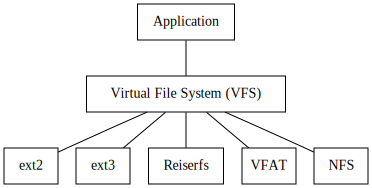

2023-08-29
Last week, we had “Impossible Stuff Day” at the Recurse Center. It’s a bit like a one-day hackathon, with the main goal of trying to do something that’s definitely past the edge of one’s abilities, and maybe adjust that edge afterwards.
I set out to access an image as a filesystem. I’d seen similar projects:
So it was obviously possible. The impossible (to me) aspect was a combination of having a very fuzzy (at best) idea of where this would be implemented (something something system calls), and having properly worked with C more than ten years ago.
I hit the Recurse Center library so I could leaf through thick books instead of turning my mouse wheel. After some quality time with a few classics, I had a very rough idea: there is an abstraction for common filesystem operations, the virtual file system1 (VFS), and a filesystem has to implement that interface. The Linux Programming Interface had a helpful diagram, roughly like this:
However, specifics about what exactly makes up the VFS were a bit more difficult to come by. The Wikipedia page about VFS and a hint from a fellow Recurser eventually led me to FUSE, “Filesystem in Userspace”.
Filesystem in Userspace (FUSE) is a software interface […] that lets non-privileged users create their own file systems without editing kernel code.
Phew 😅 No kernel hacking for me!2
To just see it in action, jump ahead to Usage Example.
There is a reference implementation of FUSE, in the form of a chunky C library. Apparently, there’s sometimes a bit of confusion around FUSE the interface and libfuse the implementation, with people referring to both as just “FUSE”—but the important part is that maybe there’s another implementation that is more Benjamin-friendly!
At first, I found Go
bindings for libfuse, which already looked better to my Gopher eyes. And a little later, a
from-scratch implementation in pure Go: bazil.org/fuse, via this blog
post describing zipfs, which
mounts a ZIP archive as a filesystem. I started digging into the
code.
And this is how far I got on the day itself, so it really was impossible for me! A few people demoed their most excellent projects: a web server in Zig as a first Zig project; beginnings of a collaborative editor with video chat; a font that converts hex colours to RGB; building a neural network; coming up with an image format from scratch; teaching the Flipper Zero to understand more types of NFC tags…
I started modifying zipfs. My goal was to mount an image
and expose it as a directory tree, with the top-level directories
representing rows of pixels, containing directories representing
individual pixels, and in those directories, there should be files named
r, g, and b, containing RGB
values scaled to 0–255. Something like this, for a 2-by-2 pixel
image:
.
├── row0
│ ├── col0
│ │ ├── b
│ │ ├── g
│ │ └── r
│ └── col1
│ ├── b
│ ├── g
│ └── r
└── row1
├── col0
│ ├── b
│ ├── g
│ └── r
└── col1
├── b
├── g
└── rbazil.org/fuse provides a very nice higher-level abstraction for a filesystem, where you have to implement a few required interfaces, and then add more capabilities via implementing more interfaces. The minimal set looks something like
type FS interface {
Root() (Node, error)
}
type Node interface {
Attr(ctx context.Context, attr *fuse.Attr) error
}Directories and files both implement Node. To enable a
directory to respond to lookup requests, it also has to implement
NodeRequestLookuper:
type NodeRequestLookuper interface {
Lookup(ctx context.Context, req *fuse.LookupRequest,
resp *fuse.LookupResponse) (Node, error)
}This is where we can “make up” whatever directory structure we want.
We also want directories to be able to handle requests corresponding to
the readdir system call, and return a slice of directory
entries; this is done by implementing
HandleReadDirAller:
type HandleReadDirAller interface {
ReadDirAll(ctx context.Context) ([]fuse.Dirent, error)
}Notice the super-strict adherence to the single-method interface Go
naming convention of just appending -er!
Lastly, so we can open files, they have to implement
NodeOpener:
type NodeOpener interface {
Open(ctx context.Context, req *fuse.OpenRequest,
resp *fuse.OpenResponse) (Handle, error)
}and the returned handle has to implement HandleReader to
actually retrieve file contents:
type HandleReader interface {
Read(ctx context.Context, req *fuse.ReadRequest,
resp *fuse.ReadResponse) error
}All these combined are enough for a read-only filesystem.
The implementation reads the image into memory when mounting (error checks and deferred close calls omitted):
func mount(path, mountpoint string) error {
reader, _ := os.Open(path)
img, _, _ := image.Decode(reader)
c, _ := fuse.Mount(mountpoint)
filesys := &FS{img: img}
return fs.Serve(c, filesys)
}And from then on, we can look things up in the image abstraction. For
example, a File has a reference to the image, knows about
its own name, and its pixel coordinates:
type File struct {
img image.Image
name string
x, y int
}And when we Open a file, we access the colour value at
those coordinates, and return a handle with a readcloser on a string
containing that value:
func (f *File) Open(ctx context.Context, req *fuse.OpenRequest,
resp *fuse.OpenResponse) (fs.Handle, error) {
r, g, b, _ := f.img.At(f.x, f.y).RGBA()
var val uint32
switch f.name {
case "r":
val = r
case "g":
val = g
case "b":
val = b
default:
return nil, fmt.Errorf("invalid filename %q", f.name)
}
// Convert from 0..65535 to 0..255
colStr := strconv.FormatUint(uint64(val>>8), 10) + "\n"
return &FileHandle{
r: io.NopCloser(strings.NewReader(colStr)),
}, nil
}It wasn’t smooth sailing, though. For the longest time, all my
filesystem did was telling me Input/output error when
trying to perform any operation on it whatsoever. After a long, long,
time I realized that my directory implementation has to set the
directory mode bit:
func (d *Dir) Attr(ctx context.Context, a *fuse.Attr) error {
a.Mode = iofs.ModeDir | 0755 // <-- This one!
return nil
}This was sufficient for most things to suddenly work!
The only other snag was all files for some reason being empty, even
though all methods were implemented. This one was way sillier because it
has nothing to do with domain knowledge. Instead, my Read
method did this:
func (fh *FileHandle) Read(ctx context.Context,
req *fuse.ReadRequest, resp *fuse.ReadResponse) error {
var val []byte
_, err := fh.r.Read(val)
resp.Data = val
return err
}As it turns out, the io.Reader interface
type Reader interface {
Read(p []byte) (n int, err error)
}isn’t magically adjusting the byte slice size for you (or allocating it), so if you give it a nil slice, you get a nil slice back. The fix was as simple as
func (fh *FileHandle) Read(ctx context.Context,
req *fuse.ReadRequest, resp *fuse.ReadResponse) error {
- var val []byte
+ val := make([]byte, req.Size)
_, err := fh.r.Read(val)
resp.Data = val
return err
}The end results of all this is at bewuethr/imgfs.
Let’s mount this blobtopus as a filesystem:
Or rather, this 10x10-pixel version of it:
Coordinates for x increase from left to right, and for y from top to bottom. Three pixels have their RGB values labelled, as retrieved with a colour picker.
We create a mount directory, and then mount the image into it:
mkdir mnt
imgfs blobtopus.png mntimgfs supports PNG, JPEG, GIF, and WebP.3
mnt now contains one directory per pixel row:
$ tree -L 1 mnt
mnt
├── row00
├── row01
├── row02
├── row03
├── row04
├── row05
├── row06
├── row07
├── row08
└── row09And each of these contains ten pixel directories (“col” for “column”):
$ tree -L 1 mnt/row00
mnt/row00
├── col00
├── col01
├── col02
├── col03
├── col04
├── col05
├── col06
├── col07
├── col08
└── col09And in each of those, there is one file per RGB component:
$ tree mnt/row00/col00
mnt/row00/col00
├── b
├── g
└── rNow, let’s check the labelled pixels! The pixel at
x/y coordinate (02/01) is in
row01/col02.
$ head mnt/row01/col02/{r,g,b} # Want: (250,231,170)
==> mnt/row01/col02/r <==
250
==> mnt/row01/col02/g <==
231
==> mnt/row01/col02/b <==
170Looking good!
And the other two:
$ head mnt/row03/col06/{r,g,b} # Want: (164,93,0)
==> mnt/row03/col06/r <==
164
==> mnt/row03/col06/g <==
93
==> mnt/row03/col06/b <==
0
$ head mnt/row07/col05/{r,g,b} # Want: (255,162,61)
==> mnt/row07/col05/r <==
255
==> mnt/row07/col05/g <==
162
==> mnt/row07/col05/b <==
61Ta-daah 🥳
The one cool additional thing to do would be to make the filesystem writeable: updating the colour value in a file would change the pixel on the actual image. Updating the in-memory image representation would be straightforward, but continually changing an on-disk image file probably less so; in-place changes wouldn’t work, so we’d have to create new images files and rename them.
I certainly learned quite a few things about filesystems and FUSE, but also feel like I scratched just the surface. The full FUSE API is huge, and I’ve implemented a fraction of it, using a very high-level abstraction, at that.
A meta-insight was that designating a chunk of time to doing something specific makes it easy to get started (you start when everybody else starts), and the whole thing being timeboxed resulted in intense focus on the problem, even when not every second was exactly thrilling.
This was very noticeable when I decided to keep working on this a day later: I made very little progress, found it difficult to focus, and got quite frustrated. I didn’t touch the project for the whole weekend, even though I totally thought I would—and when I got back to it on Monday, things seemed to fall into place quite easily.
In any case, I’m pretty happy I de-mystified “X as a filesystem” a bit for myself, and maybe now also for others.